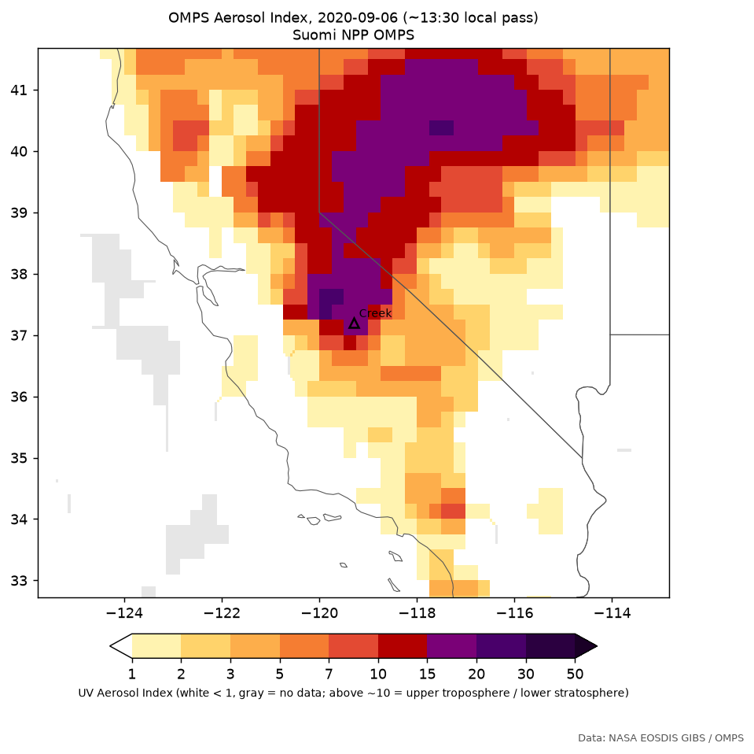
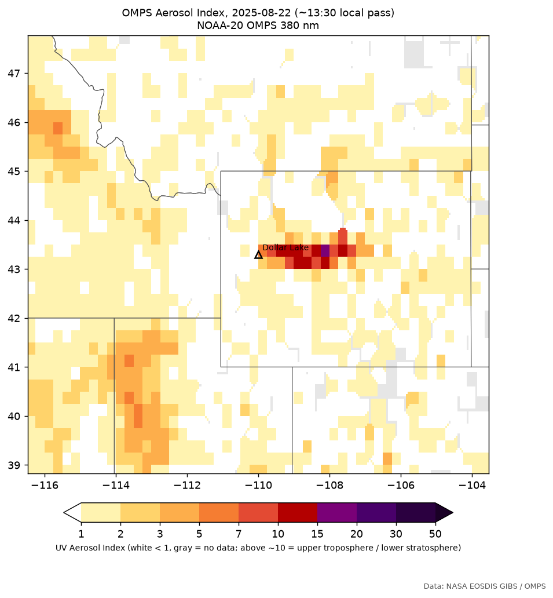
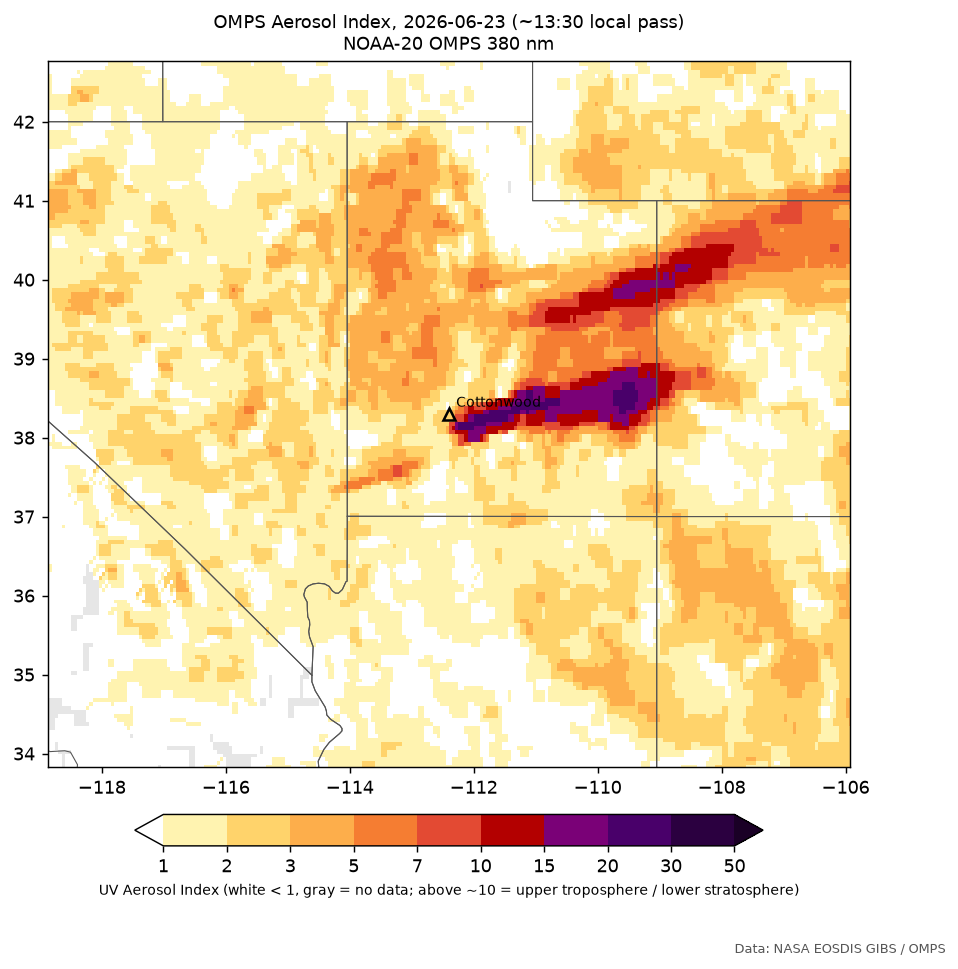
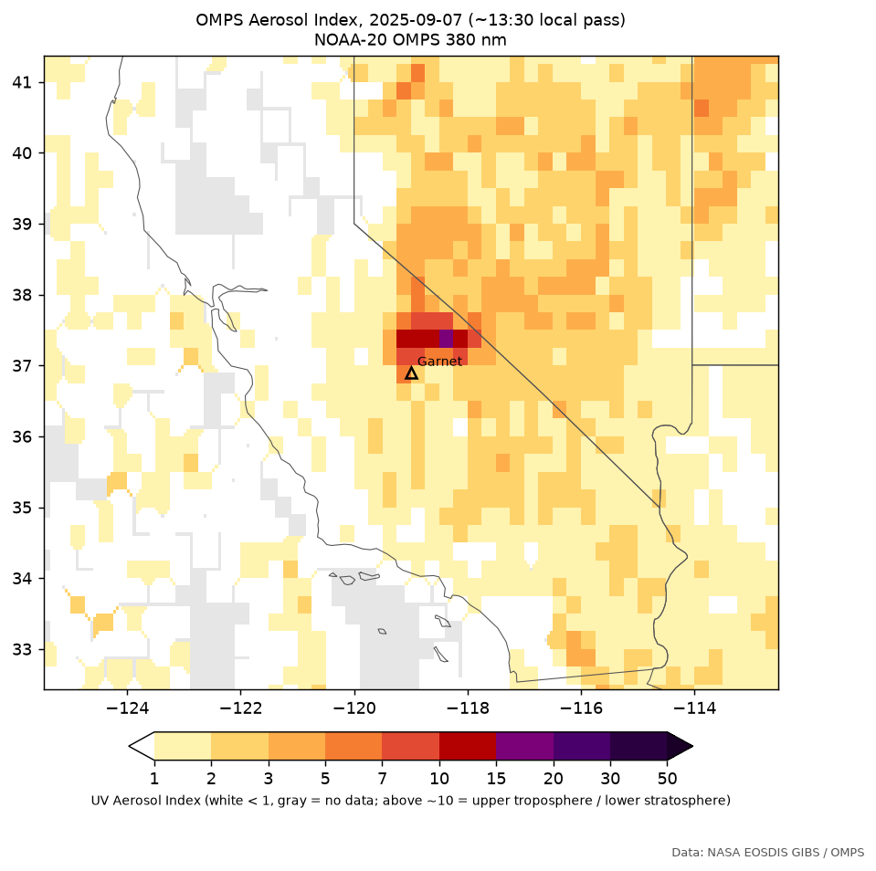

Every class on this site comes from the GOES-West weather satellite's infrared view of the cloud tops above the fire. These are the panels each day was judged from: the automatic rules flagged the day, then a reviewer looked at these pictures and made the final call.
The colour is the brightness temperature in GOES band 13 (10.3 µm, "clean" infrared), roughly the temperature of whatever the satellite sees first: the ground on a clear day, the top of a thick cloud otherwise. The air cools with height, so colder means taller.
Black circles are the GOES fire pixels from the past hour: where the fire is burning hot enough for the satellite to detect.
Each strip shows four scans: an hour and 20 minutes before the day's coldest cloud top near the fire, that scan, and 40 minutes after. A no-deep-cloud day is centred on its coldest (often still warm) plume top.
The strip's title gives the automatic call; the badge above each strip is the final class after review, and the reviewer's reason is shown when there is one.
The panels show positions as GOES sees them. A tall cloud appears displaced away from the satellite, which sits over the equator at 137°W: a 12 km top over California shows up about 12–14 km north-northeast of where it really is, so a pyroCb anvil can look as if it is beside the fire rather than on it. The classification corrects for this.
A pyroCb lifts smoke far higher than an ordinary plume. The OMPS instruments on the Suomi NPP, NOAA-20 and NOAA-21 satellites measure the UV Aerosol Index (AI). It is high where smoke or dust sits above the ground, and higher the higher the smoke sits. In October 2026 NASA FIRMS added a "pyrocumulonimbus" version of the layer on a 0–50 scale; values above about 10 usually mean smoke in the upper troposphere or lower stratosphere. Each satellite passes once a day, at about 13:30 local time, so a pyroCb that forms later shows up on the next day's pass, downwind.
The study read it two ways for every fire day: the peak AI within 150 km of the fire front on that day's pass, and the peak within 500 km on the next day's pass. Both are on Factors and Explore.
Only Suomi NPP covers these fires, with pixels 50 km across.
NOAA-20 (17 km, from June 2025) and NOAA-21 (12 km, from July 2026) see smaller plumes. To test them, 14 fires that MTBS hasn't mapped yet were run through the same GOES cloud-top classification, using the NIFC interagency perimeters:
Every automatic pyroCb day and every pyroCu day colder than −35 °C was checked by eye. No California fire had a clean pyroCb day in those 17 months. Its 124 days split into:
The only three clean pyroCbs were the western ones: Dollar Lake, Bronco and Cottonwood.
| Fires (ambiguous days out) | Pass | pyroCb ≥ 10 | pyroCu ≥ 10 | no plume ≥ 10 | pyroCb ≥ 15 | no plume ≥ 15 |
|---|---|---|---|---|---|---|
| 2025–26 test, NOAA-20/21 | same day, 150 km | 2/3 | 7/45 | 4/107 | 2/3 | 1/107 |
| 2025–26 test, NOAA-20/21 | next day, 500 km | 2/3 | 12/45 | 10/107 | 1/3 | 4/107 |
| 2017–24 study, Suomi NPP | same day, 150 km | 3/12 | 7/54 | 15/342 | 2/12 | 2/342 |
| 2017–24 study, Suomi NPP | next day, 500 km | 3/12 | 10/53 | 34/344 | 2/12 | 7/344 |
Two of the three pyroCb days read high on the finer layer (Dollar Lake 15.5, Cottonwood 23.3). Across all 152 pyroCu and no-plume days, only one same-day reading reached 15: Garnet's biggest run, 7 September 2025, which was thick low smoke (map below). So a reading of 15 or more is rare without a pyroCb. Even so, three cases settle nothing:
For now the layer shows where smoke went high, not which days were pyroCb. The test will be re-run as NOAA-21 seasons add California pyroCb days.




Data: NASA EOSDIS GIBS / OMPS. Source: NASA Earthdata, "New Higher-Resolution Aerosol Index and Pyrocumulonimbus Layers Now Available in NASA FIRMS" (13 October 2026). The 2025–26 test fires' GOES panels are not in the browser below.
Every pyroCb, pyroCu and storm day, plus each fire's two biggest days and any no-deep-cloud day whose plume top still reached −10 °C. Pick a second day to see it underneath; click a panel to enlarge it.